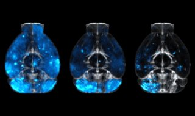
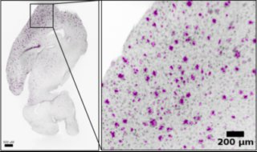
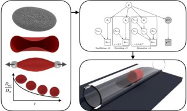

Hi, I’m Athena!
Postdoc • Computational Engineer
Education
- Ph.D., Computational Science and Engineering, D-MAVT, ETH Zürich, 2020
- M.Sc., Mechanical Engineering, University of Cyprus, 2015
- B.Sc., Mechanical Engineering, University of Cyprus, 2013
Research Interests
- Image Processing
- Computational microfluidics & Blood flow simulations
- Bayesian inference & Uncertainty Quantification
Selected Projects
During my Joint post-doc at the labs of Prof. Petros Koumoutsakos (ETH Zurich) and Prof. Adriano Aguzzi (University of Zurich), I developed computational pipelines to process large, volumetric image data obtained via light-sheet microscopy. See below for selected projects!
Segmentation of neuronal cells in whole mouse brains

An international collaboration aiming to develop a new protein-based delivery system to the central nervous system of the brain. 3D images of whole mouse-brain scans were used to detect the bio-distribution of the delivery system, using light-sheet microscopy.
Image processing was performed using a custom, in-house developed pipeline, employing shared-memory parallelism, targeted for fast processing of large 3D image datasets.
Publication under review in Cell.
Segmentation of microglia cells in drug efficacy studies

A study for the efficacy of different drugs in neurodegenerative diseases.
A novel image processing pipeline was developed to quantify drug efficacy on the sub-cellular level, through object segmentation of stained neural cells in 3D whole mouse-brain scans.
Publication under preparation.
Quantification of the stress-free state and viscoelastic properties of human red blood cells

Human erythrocytes are the dominant constituents of blood comprising around 50% of blood volume.
It is well known that their dynamics are governed by the visco-elastic properties of their membrane.
Despite its importance, today’s RBC membrane models are not able to predict blood flows without case specific adjustment of their parameters.
Additionally, RBC models rely on the assumption of a stress-free state (SFS) of the cytoskeleton, which is currently arbitrarily selected, and current experimental methods cannot measure it directly.
We introduced a transferable RBC model (t-RBC), and calibrated its viscoelastic properties as well as the SFS for the first time, using Bayesian inference.
The t-RBC model is tested on several flow configurations, and is shown to reproduce a wide range of experimental data without further calibration of its parameters.
We believe that the model introduced in this study opens new frontiers for high fidelity predictions of blood flows.
Publication (2023): Amoudruz, L., Economides, A., Arampatzis, G. and Koumoutsakos, P., 2023. The stress-free state of human erythrocytes: Data-driven inference of a transferable RBC model. Biophysical Journal.
Publication (2021): Economides, A., Arampatzis, G., Alexeev, D., Litvinov, S., Amoudruz, L., Kulakova, L., Papadimitriou, C. and Koumoutsakos, P., 2021. Hierarchical Bayesian uncertainty quantification for a model of the red blood cell. Physical Review Applied, 15(3), p.034062.
Experience
-
Postdoctoral Researcher, University of Zurich
03/2023 - present
Institute of Neuropathology | Prof. Adriano Aguzzi
Department of Quantitative Biomedicine | Prof. Magdalini Polymenidou -
External Lecturer, ETH Zurich
01/2023 - present
Course: High Performance Computing for Science and Engineering II
Department of Mechanical and Process Engineering (D-MAVT) -
Teaching Fellow & Postdoctoral Associate, Harvard University
01/2021-12/2022
Course: Introduction to Fluid Mechanics and Transport Processes
John A. Paulson School of Engineering and Applied Sciences -
Postdoctoral Researcher, ETH Zurich & University Hospital of Zurich
11/2020-12/2022
Computational Science and Engineering lab | Prof. Petros Koumoutsakos
Institute of Neuropathology | Prof. Adriano Aguzzi -
Visiting PhD student, Massachusetts General Hospital
03/2017-06/2017
Center for Engineering in Medicine | Prof. Mehmet Toner -
Research Assistant (PhD student), ETH Zurich
10/2014-10/2020
Computational Science and Engineering lab | Prof. Petros Koumoutsakos
Teaching
- External Lecturer, HPCSE II, ETH Zurich (Spring 2023)
- Head TA: High Performance Computing for Science and Engineering I (Fall 2022)
- Teaching Fellow, ES123, Harvard University (Spring 2022)
- Head TA: High Performance Computing for Science and Engineering II (Spring 2021)
- TA: High Performance Computing for Science and Engineering I (2017-2019)
- TA: Computational Methods for Engineering Applications (2015-2016)
- TA: Engineering Tool III: Object oriented programming with C++ (Spring 2015)
Links
Google Scholar • Linkedin • Workpage UZH • Workpage ETHZ
Contact
athena[dot]economides[at]uzh[dot]ch
ETH Zurich & University of Zurich
CH-8006, Zurich
Switzerland